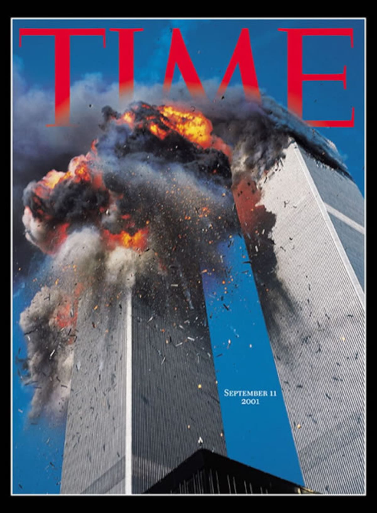

El món en una portada
SA12 · Sessió 1
El món en una portada
Una portada selecciona un instant, el converteix en relat i proposa una manera de mirar el món. Hui aprendrem a llegir-la com una font històrica, no com una simple il·lustració.
Com pot un esdeveniment d’un sol dia transformar la política, la societat i la percepció del món durant dècades?

Font visual 1: portada de Time sobre els atemptats de l’11 de setembre de 2001. Observa abans de llegir cap explicació: què mostra, què omet i quina emoció construeix?

Font visual 2: imatge del manual. Compara la selecció d’elements, l’escala geogràfica i el missatge amb la portada de Time.
Quina de les dues imatges se centra en un esdeveniment concret? Quina ofereix una visió més general? Explica com canvia la interpretació segons la selecció visual.
1. Mira abans d’interpretar
👁️ Veig
Anota cinc elements observables: enquadrament, colors, fum, edificis, persones, text i jerarquia visual. No expliques encara què signifiquen.
🧠 Pense
Formula dues interpretacions. Cada una ha de començar amb «Aquesta portada suggereix…» i incloure una evidència visual.
❓ Em pregunte
Escriu dues preguntes que la imatge no puga respondre per si sola i que exigisquen investigar altres fonts.
2. Una portada no és una finestra neutral
Lectura adaptada · El present té història
Els mitjans de comunicació no poden mostrar tota la realitat. Han de seleccionar una fotografia, una paraula, un ordre i un espai. Aquestes decisions creen una jerarquia: indiquen què mereix atenció i orienten la primera interpretació del públic.
Una portada és alhora una font primària del moment en què es publica i un relat mediàtic. Informa sobre un fet, però també permet estudiar les emocions, les prioritats i els marcs mentals d’una societat.
Per això no hem de preguntar únicament «què va passar?», sinó també «qui ho conta?», «a quin públic?», «amb quina selecció d’imatges i paraules?» i «què queda fora del marc?».
| Nivell de lectura | Pregunta | Exemple aplicat |
|---|---|---|
| Denotació | Què apareix literalment? | Edificis, fum, cel, titular, logotip i absència o presència de persones. |
| Connotació | Quines idees o emocions suggereix? | Perill, vulnerabilitat, sorpresa, destrucció o ruptura. |
| Context | Quan, on i per a qui es publica? | Societat nord-americana i audiència internacional després dels atemptats. |
| Intencionalitat | Quin efecte comunicatiu busca? | Informar, commoure, fixar una imatge icònica i captar l’atenció. |
| Límits | Què no podem saber només amb aquesta font? | Causes, responsabilitats, conseqüències i diversitat de vivències. |
3. L’11-S: del fet a les conseqüències
Context històric mínim
L’11 de setembre de 2001, membres d’Al-Qaeda segrestaren quatre avions comercials als Estats Units. Dos impactaren contra les Torres Bessones de Nova York, un contra el Pentàgon i un altre s’estavellà a Pennsilvània. Els atemptats causaren prop de 3.000 morts i tingueren una repercussió mundial.
El govern dels Estats Units impulsà l’anomenada «guerra contra el terror», inicià la intervenció a l’Afganistan el 2001 i reforçà les polítiques de seguretat i vigilància. El 2003 començà la guerra de l’Iraq en un context polític profundament marcat per l’11-S, encara que l’Iraq no fou responsable dels atemptats.
Antecedents
Final de la Guerra Freda, intervencions occidentals al Pròxim Orient, conflictes regionals, fonamentalisme violent i xarxes transnacionals.
Detonant
Els atemptats de l’11-S transformaren de manera immediata l’agenda política, mediàtica i emocional.
Respostes
Guerres, noves lleis de seguretat, vigilància, controls fronterers i redefinició d’aliances internacionals.
Conseqüències
Inestabilitat, víctimes civils, desplaçaments, polarització, islamofòbia i debat entre llibertat i seguretat.
Conceptes que necessites per pensar històricament
| Concepte | Definició operativa | Pregunta útil |
|---|---|---|
| Antecedent | Procés anterior que ajuda a entendre una situació. | Què estava passant abans? |
| Causa estructural | Condició profunda i duradora que afavoreix un procés. | Quins desequilibris o tensions s’havien acumulat? |
| Detonant | Fet que accelera o desencadena una transformació. | Per què el canvi es produeix en aquest moment? |
| Conseqüència | Efecte immediat, mitjà o llarg termini. | Què canvià i per a qui? |
| Interpretació | Explicació argumentada i sustentada en evidències. | Quines fonts sostenen aquesta conclusió? |
4. Fet, opinió i interpretació
Fet verificable
«Dos avions impactaren contra les Torres Bessones.» Pot comprovar-se amb fonts independents.
Opinió
«És la portada més impactant.» Expressa una valoració personal i no és universal.
Interpretació
«L’enquadrament reforça la sensació de vulnerabilitat.» Connecta una evidència visual amb una explicació raonada.
Com detectar una interpretació dèbil
- Presenta una única causa per explicar un procés complex.
- No identifica la font, l’autoria, la data o el públic.
- Confon coincidència temporal amb relació causal.
- Generalitza a partir d’un sol exemple.
- Utilitza paraules com «sempre», «tots» o «inevitable» sense justificació.
- Selecciona només les dades que confirmen una idea prèvia.
5. Laboratori de portada · treball en equips
Missió
Convertiu la portada en el punt de partida d’una investigació històrica. El producte serà una fitxa visual amb una hipòtesi provisional, tres evidències, dues preguntes d’investigació i una llista de fonts que necessitaríeu consultar.
Equips de 418 minutsPortaveu: 1 minut
- Descriviu: registreu cinc elements visibles sense interpretar-los.
- Interpreteu: proposeu el missatge principal i justifiqueu-lo amb tres evidències.
- Contextualitzeu: relacioneu la portada amb el fet, els antecedents i dues conseqüències.
- Poseu-la en dubte: identifiqueu dues absències o limitacions de la imatge.
- Investigueu: formuleu una pregunta oberta i indiqueu tres fonts diferents per respondre-la.
Rols i criteris d’èxit
Rols: coordinació, anàlisi visual, contextualització i verificació/portaveu.
- Distingim clarament observació i interpretació.
- Cada afirmació important inclou una evidència o indica que cal verificar-la.
- No expliquem el procés amb una causa única.
- Incloem almenys una font escrita, una visual o audiovisual i una font de dades.
- La pregunta final és concreta, investigable i històricament rellevant.
6. Model de pregunta investigable
Pregunta millorada: «Com modificaren els atemptats de l’11-S les polítiques de seguretat i la política exterior dels Estats Units entre 2001 i 2003?»
La segona pregunta delimita un tema, un espai, un període i unes variables. Això permet seleccionar fonts i construir una resposta argumentada.
7. Comprova la teua comprensió
Quina afirmació interpreta correctament una portada com a font històrica?
Quina relació causal és més rigorosa?
Ticket d’eixida · 5 minuts
Completa individualment: «La portada em permet afirmar que… Ho deduïsc perquè… Però no em permet saber… Per comprovar-ho consultaria…»
Conserva aquesta resposta: la revisarem al final de la situació d’aprenentatge per comprovar com ha evolucionat la teua explicació.